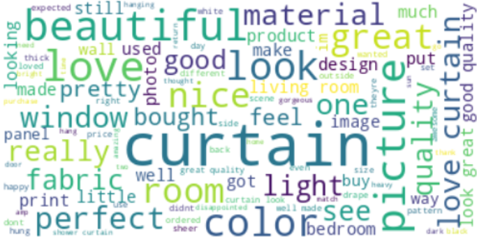

I performed sentiment analysis by analyzing customer reviews for Kozmos, a home textile retailer. The reviews were preprocessed using NLP techniques (such as cleaning and lemmatization) and labeled as positive, neutral and negative using NLTK. Afterward, the text was vectorized using TF-IDF, and classification was performed using Logistic Regression and Random Forest models.
Developed an intelligent system for a finance company to classify customers into credit score brackets (Good, Standard, Poor). Utilized Artificial Neural Networks (ANN) for prediction and addressed class imbalance using the SMOTE technique. The project involved extensive data cleaning, feature engineering, preprocessing (scaling, encoding), and model evaluation.
Analyzed UK-based online retail data to understand customer behavior using RFM analysis and K-Means clustering. Performed data cleaning, EDA, and calculated RFM scores (Recency, Frequency, Monetary) for customer segmentation. Applied K-Means clustering to identify distinct customer groups and conducted Cohort Analysis to evaluate customer retention rates.
Utilized the ANSUR II dataset (U.S. Army anthropometric survey) to predict ethnicity based on body measurements. Performed EDA, feature reduction, and applied various classification algorithms (Logistic Regression, SVM, RF, Boosting). Addressed class imbalance using SMOTE and interpreted model predictions using SHAP values for enhanced explainability.
Conducted statistical data analysis on a global tech salary dataset using R. Performed EDA, visualization (ggplot2, dplyr), and hypothesis testing (Kruskal-Wallis, Dunn test, Chi-squared) to explore relationships between salary, job title, experience level, company size, and remote work ratio. Built a linear model to analyze the effects of various factors on salary.
Performed comprehensive data cleaning, exploratory data analysis (EDA), and visualization on an online retail dataset. Handled missing values, detected and addressed outliers, and engineered new features like TotalCost and Revenue. Visualized sales distributions, payment methods, seasonal trends, correlations, top products, customer behavior, and sales channels using Plotly and Seaborn. Conducted hypothesis testing (Kruskal-Wallis) to analyze differences in sales and discounts across various categories.
Developed a comprehensive Power BI dashboard for the Global Superstore dataset, offering in-depth analyses across Product, Customer, and Region categories. Features interactive drillthroughs, tooltips, various chart types (funnel, pie, treemap, line), advanced slicers for YoY comparison, and an animated bar chart race for regional trends to deliver actionable insights.